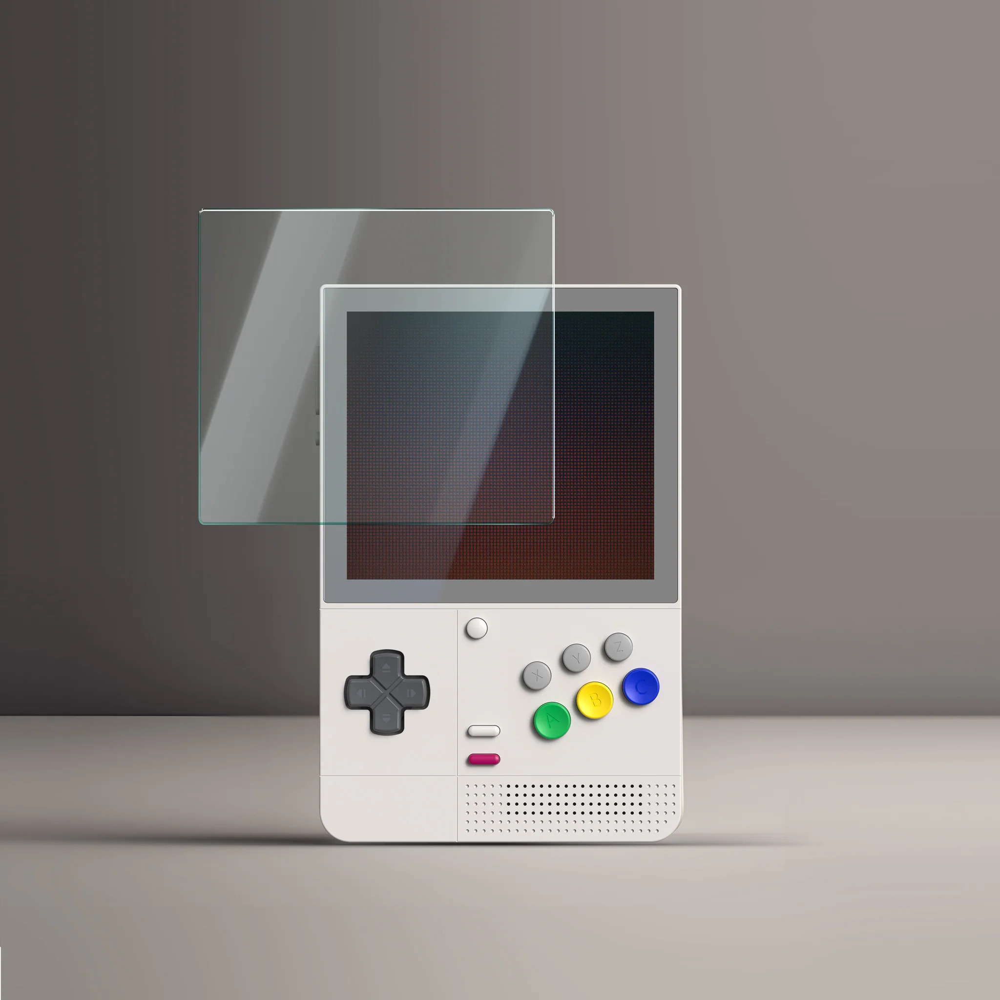

Retroid Pocket Classic Protector de pantalla

Assegura la claredat i la integritat de la pantalla de la teva Retroid Pocket Classic amb aquest protector de pantalla resistent i transparent. Fabricat amb materials d'alta qualitat, aquest protector està dissenyat per protegir la pantalla de rascades, pols i marques, mantenint la teva experiència visual impecable mentre gaudeixes dels clàssics. La seva aplicació senzilla garanteix una superfície llisa i sense bombolles, sense afectar la resposta tàctil de la teva consola. Proporciona una capa de defensa essencial per a la teva Retroid Pocket Classic i preserva la qualitat de la seva pantalla durant molt de temps.